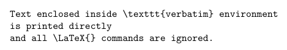
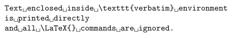
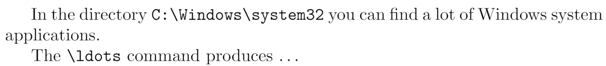
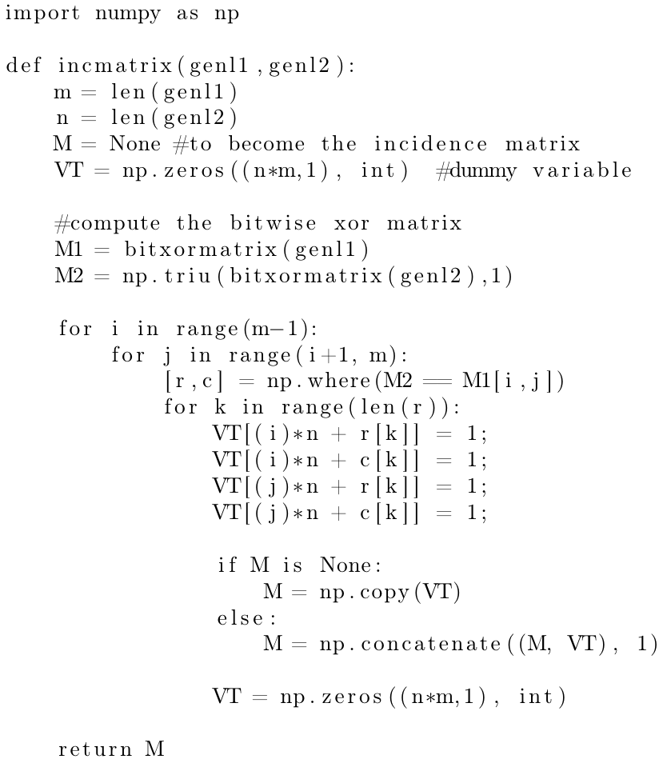
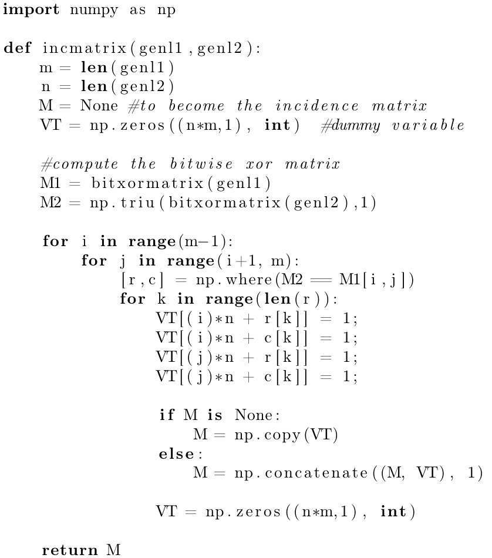
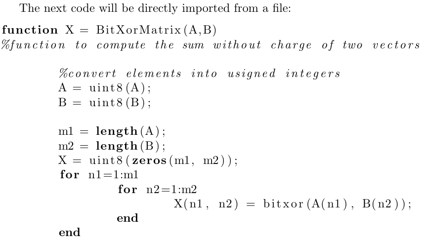
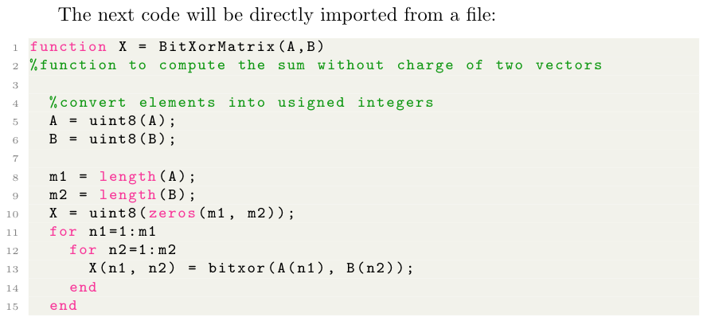
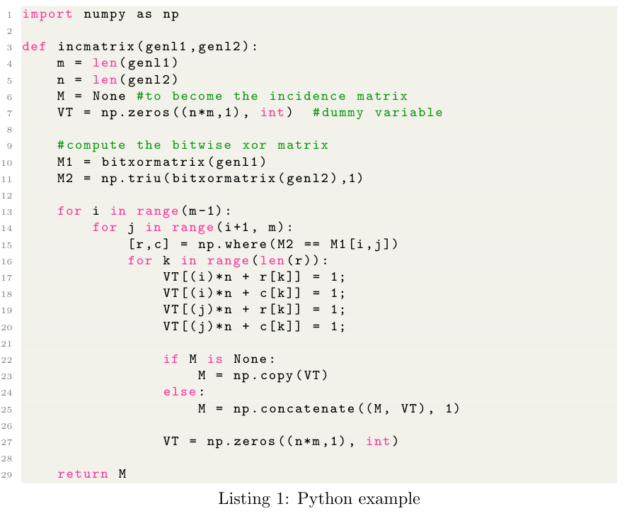
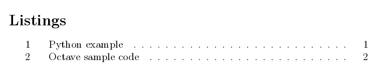

Code listing
Introduction
LaTeX is widely used in science and programming has become an important aspect in several areas of science, hence the need for a tool that properly displays code. This article explains how to use the standard verbatim environment as well as the package listings, which provide more advanced code-formatting features. This separate article discusses the minted package, which performs syntax-highlighting using Python's pygmentize library.
The verbatim environment
The default tool to display code in LaTeX is verbatim, which generates an output in monospaced font.
\begin{verbatim}
Text enclosed inside \texttt{verbatim} environment
is printed directly
and all \LaTeX{} commands are ignored.
\end{verbatim}
The code above produces the following output:

Just as in the example at the introduction, all text is printed keeping line breaks and white spaces. There's a starred version of this command whose output is slightly different.
\begin{verbatim*}
Text enclosed inside \texttt{verbatim} environment
is printed directly
and all \LaTeX{} commands are ignored.
\end{verbatim*}
The code above produces the following output:

In this case spaces are emphasized with a special "visible-space" character: ␣.
Verbatim-like text can also be used in a paragraph by means of the \verb command.
In the directory \verb|C:\Windows\system32| you can find a lot of Windows
system applications.
The \verb+\ldots+ command produces \ldots
The code above produces the following output:

The command \verb|C:\Windows\system32| prints the text inside the delimiters | in verbatim format. Any character, except letters and *, can be used as delimiter. For instance \verb+\ldots+ uses + as delimiter.
Using listings to highlight code
To use the lstlisting environment you have to add the following line to the preamble of your document:
\usepackage{listings}
Here's an example of using the lstlisting environment from the listings package:
\begin{lstlisting}
import numpy as np
def incmatrix(genl1,genl2):
m = len(genl1)
n = len(genl2)
M = None #to become the incidence matrix
VT = np.zeros((n*m,1), int) #dummy variable
#compute the bitwise xor matrix
M1 = bitxormatrix(genl1)
M2 = np.triu(bitxormatrix(genl2),1)
for i in range(m-1):
for j in range(i+1, m):
[r,c] = np.where(M2 == M1[i,j])
for k in range(len(r)):
VT[(i)*n + r[k]] = 1;
VT[(i)*n + c[k]] = 1;
VT[(j)*n + r[k]] = 1;
VT[(j)*n + c[k]] = 1;
if M is None:
M = np.copy(VT)
else:
M = np.concatenate((M, VT), 1)
VT = np.zeros((n*m,1), int)
return M
\end{lstlisting}
Open this listings example on Overleaf
The code above produces the following output:

In this example, the output ignores all LaTeX commands and the text is printed keeping all the line breaks and white spaces typed. Let's see a second example:
\begin{lstlisting}[language=Python]
import numpy as np
def incmatrix(genl1,genl2):
m = len(genl1)
n = len(genl2)
M = None #to become the incidence matrix
VT = np.zeros((n*m,1), int) #dummy variable
#compute the bitwise xor matrix
M1 = bitxormatrix(genl1)
M2 = np.triu(bitxormatrix(genl2),1)
for i in range(m-1):
for j in range(i+1, m):
[r,c] = np.where(M2 == M1[i,j])
for k in range(len(r)):
VT[(i)*n + r[k]] = 1;
VT[(i)*n + c[k]] = 1;
VT[(j)*n + r[k]] = 1;
VT[(j)*n + c[k]] = 1;
if M is None:
M = np.copy(VT)
else:
M = np.concatenate((M, VT), 1)
VT = np.zeros((n*m,1), int)
return M
\end{lstlisting}
Open this listings example on Overleaf
The code above produces the following output:

The additional parameter inside brackets [language=Python] enables code highlighting for this particular programming language (Python), special words are in boldface font and comments are italicized. See the reference guide for a complete list of supported programming languages.
Importing code from a file
Code is usually stored in a source file, therefore a command that automatically pulls code from a file becomes very handy.
The next code will be directly imported from a file
\lstinputlisting[language=Octave]{BitXorMatrix.m}

The command \lstinputlisting[language=Octave]{BitXorMatrix.m} imports the code from the file BitXorMatrix.m, the additional parameter in between brackets enables language highlighting for the Octave programming language. If you need to import only part of the file you can specify two comma-separated parameters inside the brackets. For instance, to import the code from the line 2 to the line 12, the previous command becomes
\lstinputlisting[language=Octave, firstline=2, lastline=12]{BitXorMatrix.m}
If firstline or lastline is omitted, it's assumed that the values are the beginning of the file, or the bottom of the file, respectively.
Code styles and colours
Code formatting with the listing package is highly customisable. Let's see an example
\documentclass{article}
\usepackage{listings}
\usepackage{xcolor}
\definecolor{codegreen}{rgb}{0,0.6,0}
\definecolor{codegray}{rgb}{0.5,0.5,0.5}
\definecolor{codepurple}{rgb}{0.58,0,0.82}
\definecolor{backcolour}{rgb}{0.95,0.95,0.92}
\lstdefinestyle{mystyle}{
backgroundcolor=\color{backcolour},
commentstyle=\color{codegreen},
keywordstyle=\color{magenta},
numberstyle=\tiny\color{codegray},
stringstyle=\color{codepurple},
basicstyle=\ttfamily\footnotesize,
breakatwhitespace=false,
breaklines=true,
captionpos=b,
keepspaces=true,
numbers=left,
numbersep=5pt,
showspaces=false,
showstringspaces=false,
showtabs=false,
tabsize=2
}
\lstset{style=mystyle}
\begin{document}
The next code will be directly imported from a file
\lstinputlisting[language=Octave]{BitXorMatrix.m}
\end{document}
The code above produces the following output:

As you see, the code colouring and styling greatly improves readability.
In this example the package xcolor is imported and then the command \definecolor{}{}{} is used to define new colours in rgb format that will later be used. For more information see: using colours in LaTeX
There are essentially two commands that generate the style for this example:
\lstdefinestyle{mystyle}{...}- Defines a new code listing style called "mystyle". Inside the second pair of braces the options that define this style are passed; see the reference guide for a full description of these and some other parameters.
\lstset{style=mystyle}- Enables the style "mystyle". This command can be used within your document to switch to a different style if needed.
Captions and the list of Listings
Just like in floats (tables and figures), captions can be added to a listing for a more clear presentation.
\begin{lstlisting}[language=Python, caption=Python example]
import numpy as np
def incmatrix(genl1,genl2):
m = len(genl1)
n = len(genl2)
M = None #to become the incidence matrix
VT = np.zeros((n*m,1), int) #dummy variable
#compute the bitwise xor matrix
M1 = bitxormatrix(genl1)
M2 = np.triu(bitxormatrix(genl2),1)
for i in range(m-1):
for j in range(i+1, m):
[r,c] = np.where(M2 == M1[i,j])
for k in range(len(r)):
VT[(i)*n + r[k]] = 1;
VT[(i)*n + c[k]] = 1;
VT[(j)*n + r[k]] = 1;
VT[(j)*n + c[k]] = 1;
if M is None:
M = np.copy(VT)
else:
M = np.concatenate((M, VT), 1)
VT = np.zeros((n*m,1), int)
return M
\end{lstlisting}
Open this listings example on Overleaf
The code above produces the following output:

Adding the comma-separated parameter caption=Python example inside the brackets, enables the caption. This caption can be later used in the list of Listings.
\lstlistoflistings

Sample Overleaf project
Open this link to try out the listings package example on Overleaf.
Reference guide
Supported languages
supported languages (and its dialects if possible, dialects are specified in brackets and default dialects are italized):
| ABAP (R/2 4.3, R/2 5.0, R/3 3.1, R/3 4.6C, R/3 6.10) | ACSL |
| Ada (2005, 83, 95) | Algol (60, 68) |
| Ant | Assembler (Motorola68k, x86masm) |
| Awk (gnu, POSIX) | bash |
| Basic (Visual) | C (ANSI, Handel, Objective, Sharp) |
| C++ (ANSI, GNU, ISO, Visual) | Caml (light, Objective) |
| CIL | Clean |
| Cobol (1974, 1985, ibm) | Comal 80 |
| command.com (WinXP) | Comsol |
| csh | Delphi |
| Eiffel | Elan |
| erlang | Euphoria |
| Fortran (77, 90, 95) | GCL |
| Gnuplot | Haskell |
| HTML | IDL (empty, CORBA) |
| inform | Java (empty, AspectJ) |
| JVMIS | ksh |
| Lingo | Lisp (empty, Auto) |
| Logo | make (empty, gnu) |
| Mathematica (1.0, 3.0, 5.2) | Matlab |
| Mercury | MetaPost |
| Miranda | Mizar |
| ML | Modula-2 |
| MuPAD | NASTRAN |
| Oberon-2 | OCL (decorative, OMG) |
| Octave | Oz |
| Pascal (Borland6, Standard, XSC) | Perl |
| PHP | PL/I |
| Plasm | PostScript |
| POV | Prolog |
| Promela | PSTricks |
| Python | R |
| Reduce | Rexx |
| RSL | Ruby |
| S (empty, PLUS) | SAS |
| Scilab | sh |
| SHELXL | Simula (67, CII, DEC, IBM) |
| SPARQL | SQL |
| tcl (empty, tk) | TeX (AlLaTeX, common, LaTeX, plain, primitive) |
| VBScript | Verilog |
| VHDL (empty, AMS) | VRML (97) |
| XML | XSLT |
Options to customize code listing styles
- backgroundcolor - colour for the background. External color or xcolor package needed.
- commentstyle - style of comments in source language.
- basicstyle - font size/family/etc. for source (e.g.
basicstyle=\ttfamily\small) - keywordstyle - style of keywords in source language (e.g.
keywordstyle=\color{red}) - numberstyle - style used for line-numbers
- numbersep - distance of line-numbers from the code
- stringstyle - style of strings in source language
- showspaces - emphasize spaces in code (true/false)
- showstringspaces - emphasize spaces in strings (true/false)
- showtabs - emphasize tabulators in code (true/false)
- numbers - position of line numbers (left/right/none, i.e. no line numbers)
- prebreak - displaying mark on the end of breaking line (e.g.
prebreak=\raisebox{0ex}[0ex][0ex]{\ensuremath{\hookleftarrow}}) - captionpos - position of caption (t/b)
- frame - showing frame outside code (none/leftline/topline/bottomline/lines/single/shadowbox)
- breakatwhitespace - sets if automatic breaks should only happen at whitespaces
- breaklines - automatic line-breaking
- keepspaces - keep spaces in the code, useful for indetation
- tabsize - default tabsize
- escapeinside - specify characters to escape from source code to LaTeX (e.g.
escapeinside={\%*}{*)}) - rulecolor - Specify the colour of the frame-box
Further reading
For more information see:
Overleaf guides
- Creating a document in Overleaf
- Uploading a project
- Copying a project
- Creating a project from a template
- Using the Overleaf project menu
- Including images in Overleaf
- Exporting your work from Overleaf
- Working offline in Overleaf
- Using Track Changes in Overleaf
- Using bibliographies in Overleaf
- Sharing your work with others
- Using the History feature
- Debugging Compilation timeout errors
- How-to guides
- Guide to Overleaf’s premium features
LaTeX Basics
- Creating your first LaTeX document
- Choosing a LaTeX Compiler
- Paragraphs and new lines
- Bold, italics and underlining
- Lists
- Errors
Mathematics
- Mathematical expressions
- Subscripts and superscripts
- Brackets and Parentheses
- Matrices
- Fractions and Binomials
- Aligning equations
- Operators
- Spacing in math mode
- Integrals, sums and limits
- Display style in math mode
- List of Greek letters and math symbols
- Mathematical fonts
- Using the Symbol Palette in Overleaf
Figures and tables
- Inserting Images
- Tables
- Positioning Images and Tables
- Lists of Tables and Figures
- Drawing Diagrams Directly in LaTeX
- TikZ package
References and Citations
- Bibliography management with bibtex
- Bibliography management with natbib
- Bibliography management with biblatex
- Bibtex bibliography styles
- Natbib bibliography styles
- Natbib citation styles
- Biblatex bibliography styles
- Biblatex citation styles
Languages
- Multilingual typesetting on Overleaf using polyglossia and fontspec
- Multilingual typesetting on Overleaf using babel and fontspec
- International language support
- Quotations and quotation marks
- Arabic
- Chinese
- French
- German
- Greek
- Italian
- Japanese
- Korean
- Portuguese
- Russian
- Spanish
Document structure
- Sections and chapters
- Table of contents
- Cross referencing sections, equations and floats
- Indices
- Glossaries
- Nomenclatures
- Management in a large project
- Multi-file LaTeX projects
- Hyperlinks
Formatting
- Lengths in LaTeX
- Headers and footers
- Page numbering
- Paragraph formatting
- Line breaks and blank spaces
- Text alignment
- Page size and margins
- Single sided and double sided documents
- Multiple columns
- Counters
- Code listing
- Code Highlighting with minted
- Using colours in LaTeX
- Footnotes
- Margin notes
Fonts
Presentations
Commands
Field specific
- Theorems and proofs
- Chemistry formulae
- Feynman diagrams
- Molecular orbital diagrams
- Chess notation
- Knitting patterns
- CircuiTikz package
- Pgfplots package
- Typesetting exams in LaTeX
- Knitr
- Attribute Value Matrices
Class files
- Understanding packages and class files
- List of packages and class files
- Writing your own package
- Writing your own class